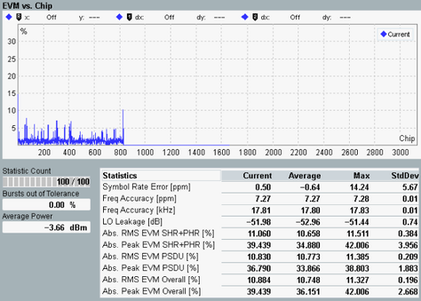

The view shows the offset and absolute EVM. Traces and statistical results are available.
To calculate the offset EVM, the in-phase portion of the first chip is combined with the quadrature-phase of the next chip. The offset EVM is calculated at the actual decision points used by the demodulator. Switch between offset and absolute results using "Display" > "Results Type" hotkey. See also: "Spreading and Modulation". |

The graph covers the entire burst. "Current", "Average", and "Maximum" traces are available for selection.
The statistical table displays modulation results covering headers, payload and complete PPDU. (See also: "PHY Protocol Data Unit (PPDU) Structure".) Use the key combination "Display" > "Results Type" to select offset or absolute EVM results.
For the statistical results, refer to "Statistical Modulation Results".